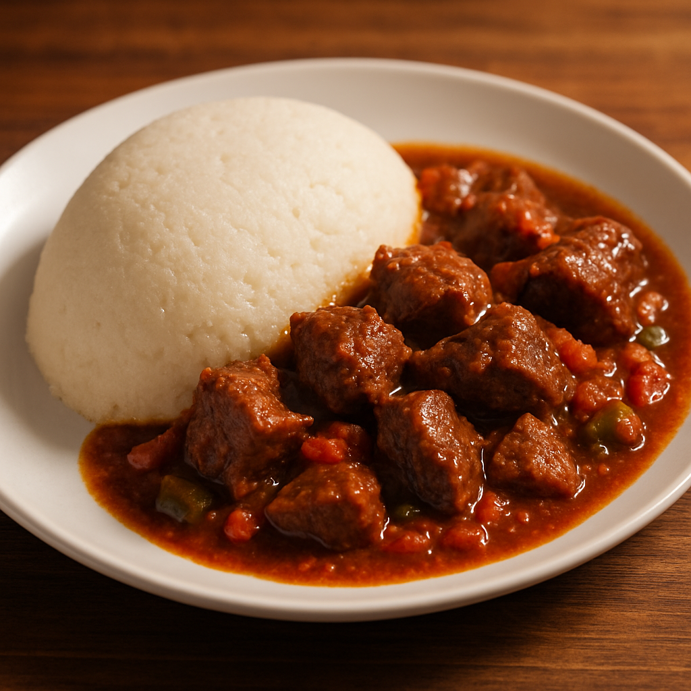

Ugali Beef

Description
Ugali with beef stew is a classic Kenyan meal that brings together hearty, comforting flavors. The ugali, made from maize flour and water, acts as the perfect base—thick, filling, and mild in taste—while the rich beef stew provides savory depth with tender meat simmered in a tomato-onion sauce. This combination is a staple in many Kenyan homes, offering both nourishment and tradition on every plate.
Below are the ingredients and steps to prepare this amazing dish.
Ingredients for Ugali
Ingredients for Beef Stew
- 500g beef (cubed)
- 2 tablesoons cooking oil
- 1 large onion (chopped)
- 2 garlic cloves (minced)
- 1-inch piece of ginger (grated)
- 2 tomatoes (chopped)
- 1 tablespoon tomato paste (optional, for color & richness)
- 1 beef stock cube (optional)
- 1 green bell pepper (chopped – optional)
- Salt to taste
- Black pepper to taste
- 1 teaspoon curry powder or beef masala (optional)
- Fresh coriander (dhania), chopped (for garnish)
- Water or broth (enough to simmer the stew)
Steps
- Boil the cubed beef in enough water for 20-30 minutes, or until the meat is tender.
- Once ready, heat oil in a sufuria and sauté chopped onions until golden. Add garlic and ginger, and stir briefly.
- Add the beef cubes and cook until browned. Then add chopped tomatoes (and tomato paste if using) and cook until soft.
- Season with salt, pepper, spices, and a stock cube if desired. Add enough water or broth to cover the beef, then let it simmer on low heat for a few more minutes.
- While the stew is simmering, prepare the ugali. Boil 4 cups of water in another sufuria.
- Gradually add maize flour while stirring to prevent lumps. Continue adding flour until the mixture thickens to your preferred consistency.
- Stir and turn the ugali with a mwiko for a few minutes until fully cooked, then shape it and let it sit.
- Once the stew is ready, garnish with chopped coriander and serve hot with the ugali.
Home